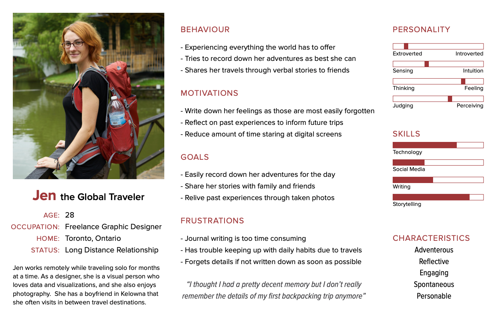
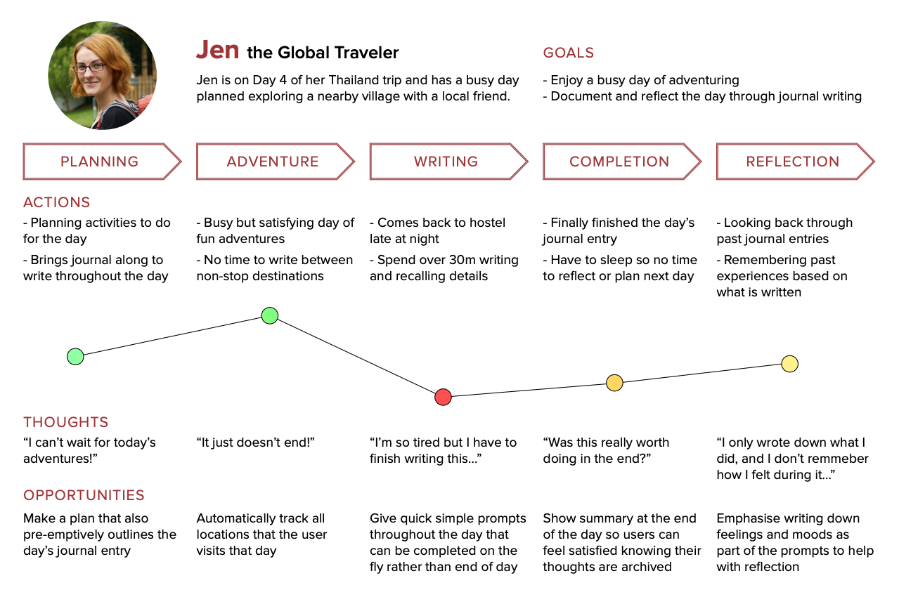
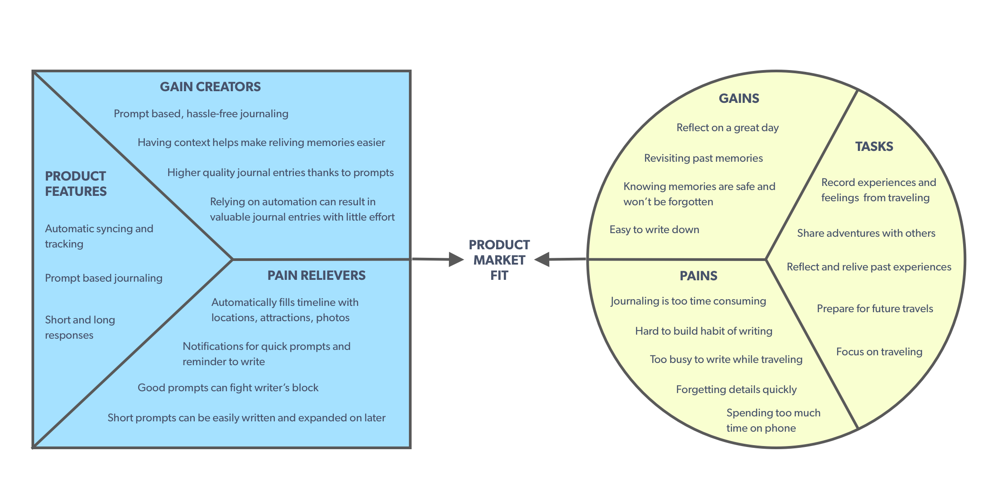
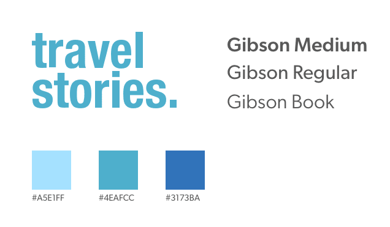

Travel Stories
Capturing travel experiences
Product Design
about
Travel Stories is a journaling app that helps travelers capture their feelings and experiences along with the context around it. The journaling process is made easier through automatic syncing and a dynamic prompt based system.
role
UX Designer
(Solo project)
timeline
6 Weeks (Apr - May 2019)
3 Weeks Redesign (Sept 2019)
methods
User Interviews
Personas
Value Proposition Canvas
User Journey Map
Card Sorting
Wireframes
High Fidelity Mockups
PROBLEM
Journaling is hard (temp title)
Many travelers want to remember the details of their adventures, but journaling is often seen as a laborious task that is difficult to fit into a hectic travel schedule. Having to sit down at the end of a long day to write is enough to turn away many prospective journalers despite their desires to maintain a log of their travels. The longer it is put off, the easier it is to forget the details of even the most memorable experiences.
SOLUTION
Travel Stories
Travel Stories is a travel journal app that makes the journaling process easier and hassle-free. It operates on the idea that capturing just a bit of the context and details of an experience is enough to trigger memories that bring you back to that moment.
Automatic Syncing
The locations visited throughout the day are automatically tracked and synced to a timeline along with any photos taken.
Prompt Based Journaling
Prompts are suggested based on the location visited. There is always the option to enter custom prompts.
Expanding on Prompts
The short prompts can be answered with minimal effort while on the move, whereas the optional longer responses can be expanded on later when there is more time to spare. Having the short prompt around can help kickstart the writing process for deeper introspection later.
PROCESS
Exploring the journaling world (temp)
User Interviews
I conducted user interviews in order to gain a better understanding of travelers and their perception of journaling. It just so happens that I was traveling at the time, so I interviewed 5 people at the airport which is a good target demographic.
My main research questions were to find out:
- Whether participants have tried travel journaling and any difficulties encountered
- Which aspects of their travels do they want to remember/reflect on
One way I tried to dig deeper into their thoughts was to ask them to describe a recent memorable travel experience. This was an indirect way to see what they value most about traveling as people feel more engaged describing a past experience than answering questions with no context.
Some useful insights I discovered:
- One participant valued recording down feelings more than details on what they did
- Another said they used past journal entries as a way to look forward to future plans
- Visuals such as photographs helps “bring them back to good memories”
- Most participants saw the appeal of journaling, but could not build a habit doing it
Competitor Analysis (might remove?)
There are many apps out on the market that target similar goals and audiences, so I wanted to investigate and see how Travel Stories can offer a unique advantage.
Snapchat/Instagram Stories
Many people already use these social media platforms to share their adventures. However, these stories are often lacking in context and travel specific features to share a complete story.
Polarsteps
This is a popular app that also does similar automatic tracking for travel journaling. What it lacks is a way to make the journaling process easier as it mostly involves writing long responses. Their focus is more on creating a log that can be turned into a travel book afterwards.
Google Maps Timeline
This is a hidden feature of Google Maps that actually does a great job of tracking location on a timeline with photos, but it lacks any journaling features. The timeline was a big source of inspiration for this app though.
Persona
With the insight gained from the interviews, I put together a persona to represent my target user.

Jen is an adventurous freelancer who travels for months at a time. She desires to record her experiences and feelings before any details are forgotten. However, she has a very busy schedule, often balancing remote work with travel, so she does not have much time for writing in between.
Developing this persona helped keep me aligned with my goals of making a hassle free journaling app for someone who is on the move and doesn’t have much time for a traditional format journal.
User Journey Map
This user journey map for the persona shows the current pain points with trying to keep a travel journal. It offers opportunities where I can improve on the experience such as giving quick prompts to make writing easier on the go. This priority was not seen in competitor apps. With the right prompts, journaling will take less time and the resulting entries can provide more value in the reflection phase after.
Card Sort
In order to organize the various features and values I came up with for the app, I conducted a Card Sort activity with some classmates. The goal was to arrange these concepts into logical groups and see how they can be structured.
The interesting part of these results is not where they are similar, but the different ways people thought about how these groups came together. These subtle differences reflect on the mental model of how they framed the problem and solution. This activity helped inform me about the user flow and priorities of the app.
Wireframes
This wireframe shows the basic flow of the application and how an external notification can start the prompt flow.
High Fidelity Mockups

REVISIT
Can't see everything on first trip
Value Proposition Canvas

The Value Proposition Canvas is a technique I learned to find the product market fit between the products and services I am offering and the needs of my target users. By mapping out the gains and pains along with ways to create or relieve them, I can see where there might be gaps in the current product fit.
Revisiting my product with this canvas helped me see that the old way of doing prompts did not really fit with the goals of a person wanting to record their full experiences. These prompts were too narrow and restricted the creative possibilities of journal writing.
I redesigned the prompts to focus on the goal of being quick to write while still allowing creative freedom. There are now dynamic prompts given depending on the context of the location. The user can also enter their own if they have something in mind.
The suggested prompts can be a good jumping off point for high quality journal entries without having to deal with writer’s block. Having both a short and long response field creates a balance between respecting the traveler’s time while still allowing for in-depth writing.
UI Redesign
While redesigning the UI, I tried to incorporate common UI patterns from the Apple Human Interface Guidelines to create a modern and familiar looking app.
There wasn’t much thought into the visual branding originally, but this time I had to chance to apply a more consistent brand. This blue palette fits more with the traveling theme and the typeface Gibson was chosen for a more humanistic, welcoming look. The logo itself was kept neutral to prevent association with a particular mood as people travel and write in different ways.
Cards are used to organize each day. When clicked, they will expand to a modal view of the timeline of that day’s activity.
Each journal entry is now embedded into the timeline view itself. This helps keep it in context and can be read as part of an entire day’s narrative instead of as individual pieces.
OUTCOMES
Future Plans and Reflections
Future Work
The current prototype is just explores the prompt and timeline aspects of this app. The next directions to explore would be Sharing and Journaling features. I added hints while doing my redesign for where these features could be found.
There was a big desire for travelers to share their adventures with others. One way these entries can be shared would be to curate a story with top destinations from that trip. Each entry has a star beside it where it can be saved to a Stories tab. From there, users can hand pick which entries they want to share with others.
There is also a Journal tab that can be used for free-form journaling. While quick prompts and location syncing are great for on-the-go journaling, users might want a place to write thoughts separate from travel or have a place to jot down notes or ideas like a traditional journal.
Personal Lessons
Being able to revisit this project was a great opportunity to improve on an existing idea that I didn’t explore to its potential. This concept came up early in my program, but thinking about it again with new perspective allowed me to see the gaps in my previous thinking.
It also gave me more confidence seeing how my UI skills have improved in a short time. Even though I am more interested on the UX side, being able to produce high quality visuals is an important part of being a well-rounded designer.
next project